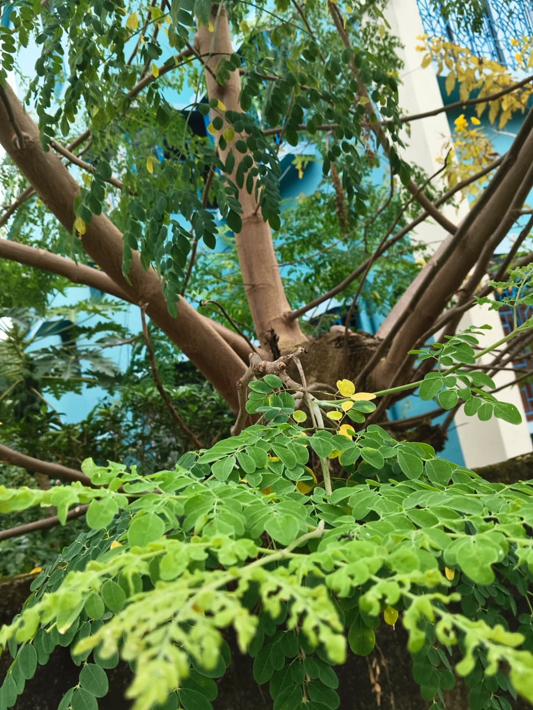
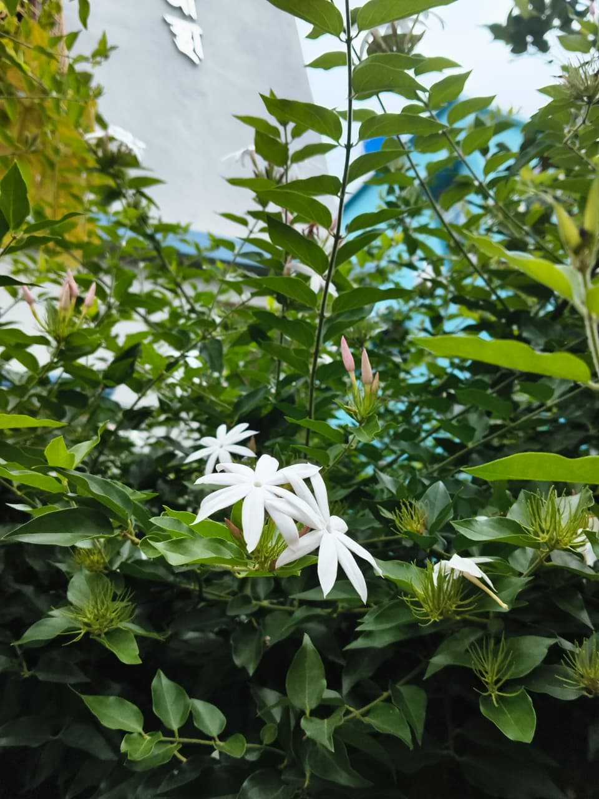
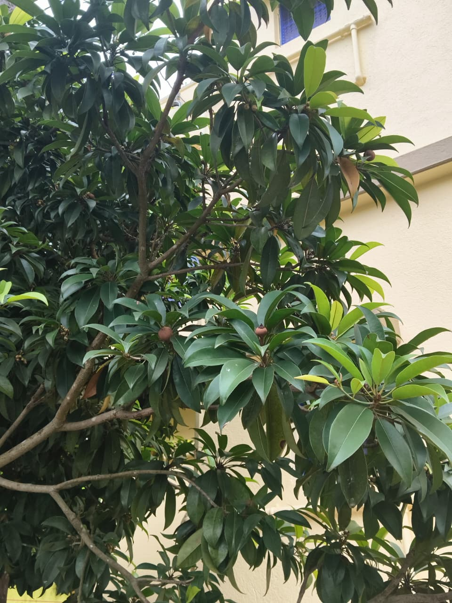
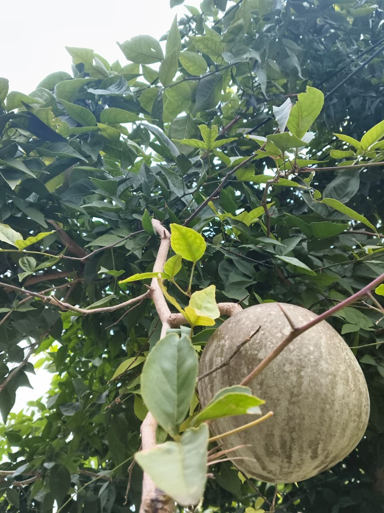
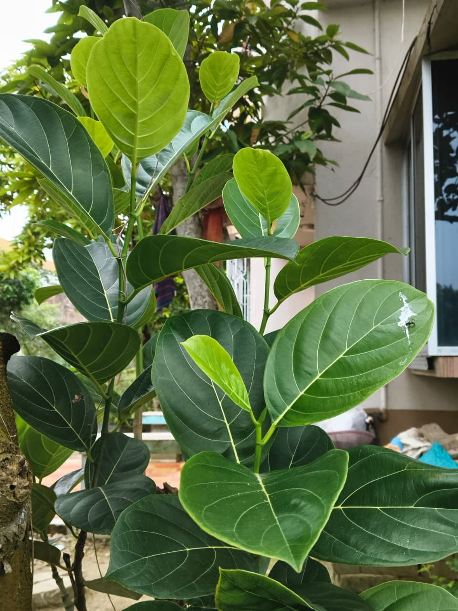

Discovering the beautiful trees around my home

Scientific Name: Moringa oleifera
Family: Moringaceae
Common Uses: Leaves, flowers and pods are used as food and in traditional medicine.
Description: A small to medium-sized tree with delicate leaves and long pods.

Scientific Name: Tabernaemontana divaricata
Family: Apocynaceae
Common Uses: Commonly grown as an ornamental plant for its beautiful white flowers.
Description: An evergreen plant with glossy green leaves and attractive white flowers.

Scientific Name: Manilkara zapota
Family: Sapotaceae
Common Uses: Its sweet fruits are eaten fresh and used in different food products.
Description: An evergreen tree with thick green leaves and sweet brown fruits.

Scientific Name: Aegle marmelos
Family: Rutaceae
Common Uses: The fruits are used to make juice, sherbet and traditional food preparations.
Description: A medium-sized tree with trifoliate leaves and hard-shelled fruits.

Scientific Name: Artocarpus heterophyllus
Family: Moraceae
Common Uses: Ripe and unripe fruits are used as food. The seeds are also edible.
Description: A large evergreen tree that produces large, nutritious fruits.